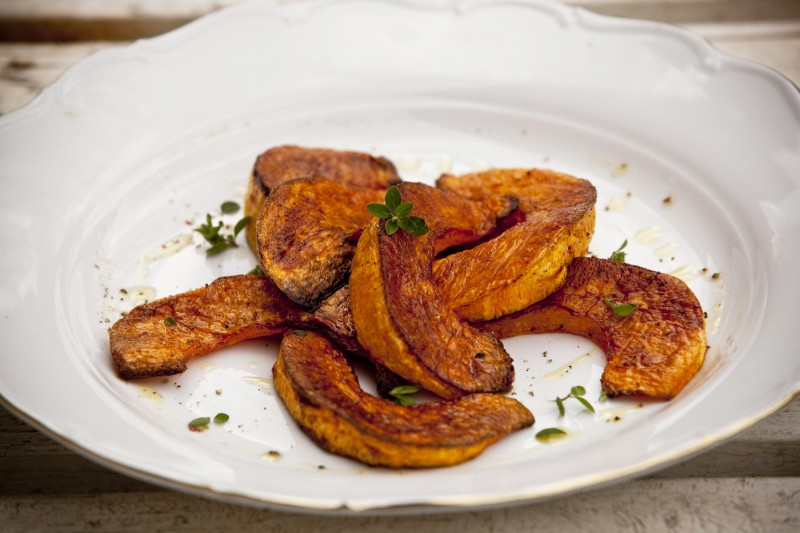

Pečená dýně

Popis
Ingredience
- dýně hokaido
- olej
- sůl
- pepř
- tymián
- chléb
Postup
- Dýni omyjeme, pokud je slupka měkká, nemusíme ani loupat.
- Následně dýni rozkrojíme, vydlabeme dužninu se semínky a očištěnou stěnu dýně nakrájíme na měsíčky.
- Na plech rozprostřeme pečící papír či telfonovou podložku a rovnoměrně na ni rozprostřeme nakrájenou dýni.
- Kousky dýně řádně pokameme olejem, osolíme, opepříme a poklademe větvičkami tymiánu.
- Pečeme na 150 stupňů do změknutí dýně.
- Podáváme s chlebem, možno dochutit dipem dle osobní volby.